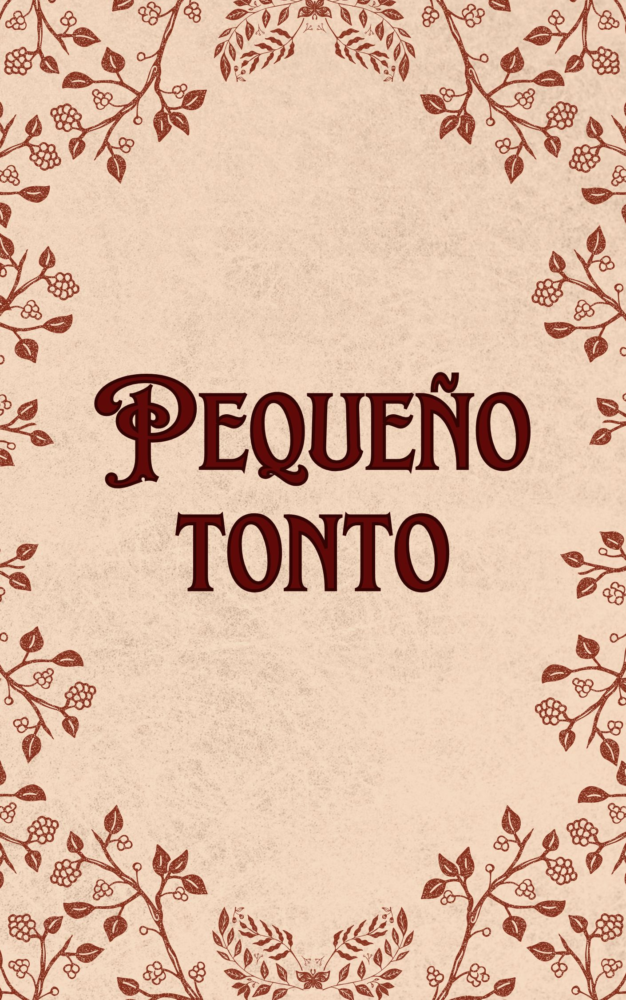

Cultivando carne cálidamente, vida común, no hay grandes altibajos, solo trivialidades domésticas, come carne todos los días.
La rutina diaria del pequeño tonto Chang Geng siempre es follado por el culo por su marido ~
El poderoso y audaz cazador Gong contra el adorable tonto Shou.